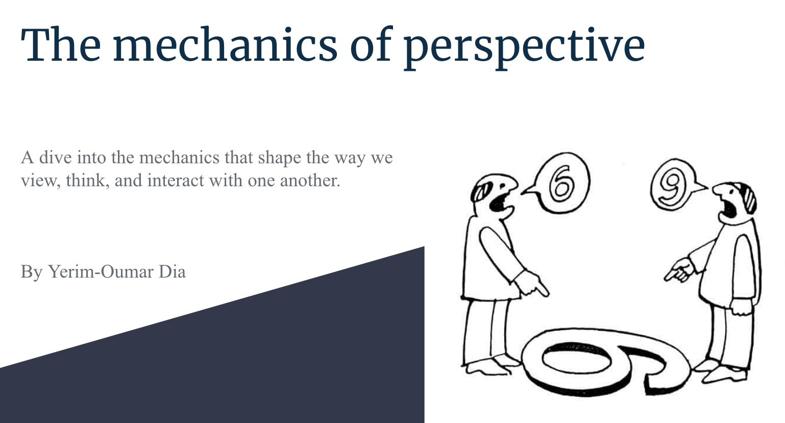
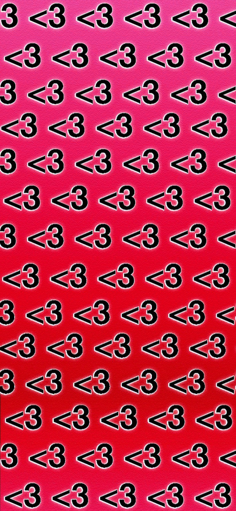

Phase 2/3 Course Goals
1. Foster the creative habits of mind
One project after the other I have had to dig deep into different souces of inspiration adn create a compilation of whatever I would be feeling at that particular time. I have seen my creative process and execution truly progress and evolve over the course of these few weeks. Thus, I belive the various projects I have made are a testimony to this process.
2. Engage with others in a workshop environment
Making these various projects themsleves was a major part of the fufillment and satisfaction gained, but a critical component that make this memorable was helping each other out and being able to learn and inspire one another. As indiviudals we each came into this class with different ways of thinking and vieiwing the multiple aspects of life. Yet, we are able to come together despite these differences, and utilize them in a way that is benecial and constuvtie to everyone else. We were eached tasked with the same projects, but we all produced different outputs and that is only part of the beauty that comes with working and enaging with others in this workshop style enviornment.
3. Think deeply about craft
Being presented with all these different projects I often had to take a step back and think about the overall context of the project and what would be most apporpriate to make in that context. However thinking about these things tends to lead you down even more rabbitholes where the possibilities are endless. When faced with making art or just looking at an art piece, there are infinte number of reasons as to why the artist would have made this piece. The true beauty of art, in all its forms, is that ultimately it is meant to be reacted to. Art need to be seen, touched, and heard by the audience, and it is often their reaction that encorportates the beauty of that artwork. Art is extremely subjective, and thinking deeply about craft has helped me understand this.
4. Engage in sustained research and skills development.
As we have been prompted with more complex tasks and projects to complete, I have often turned to many online blogs or Youtube videos to help me navigate through obstacles and deepen my understanding of the various tools and software I was presented with. While doing the research for my final project, I have also been able to learn effective notetaking skills to filter the most adequate and useful information for my final product.
5. Learn to present your work
With having made all these different projects, and using all these different softwares and components available, I have truly learned to become more confidennt and resilient about my work. This has led to me feeling less stressed and overwhemling when it comes to displaying and presenting my work in front of other people.
Phase 4: Interactive Installation
Multimedia Research Presentation

This is a complation of all our deep hours of research for our final projects. I went on to explore about the mind and how it pushes us to view one another with different lenses in this world that we all coexist in at the same time.
Interactive Kiosk Installation
Using everything we have learned over the course of the semester we finsihed off with an interactive installation that covers an area of interest. I did a display on a few of the different key factors that play a role in the perception of our mnds and how that affects our behaviors as individuals and members of a group.
Phase 4 Course Goals
1. Foster the creative habits of mind
So far, the course has explored a variety of mediums and approaches. This has greatly expanded my knowledge of various aspects and attributes of design. By exploring the many materials and resources available in this course, I was able to understand the fundamentals and key points in creating digital media and interactive platforms. One project at a time, he had to dig deep into different sources of inspiration and create a compilation of how he was feeling at that particular point in time. Over the past months, I've seen my creative process and execution progress immensly. So I believe the various projects I have done are testament to this process. I have immensly enjoyed every aspect of this class and will use alot of what it has brought to me in the near and upcoming futute. >.
2. Engage with others in a workshop environment
Doing these different projects on my own was a big part of the fulfillment and satisfaction, but the key ingredient that made this so memorable was helping each other, learning from each other, and inspiring each other. As individuals, we all came into this class with different mindsets and perspectives on different aspects of life. Yet despite these differences, we can unite and use them in a beneficial and constructive way for everyone else.We were each entrusted with the same project. However, each produced different results. That's just one of the benefits of working in this workshop-style environment and interacting with others. The layout and approach of this course make it very easy to interact with your peers, helping each other as well as learning from each other. We all came into this course with different skills and goals and I think that adds to the beauty of this course. Many times I found myself asking for help from my peers and they were able to point me in the right direction. What fascinates me is how people integrate the fundamentals of design differently and is to see how you can create an infinite number of different projects.
3. Think deeply about craft
These various projects required me to step back and think about the overall context of the project and what was most appropriate in that context. However, when you think about these things, you tend to fall further down the rabbit hole of endless possibilities.When it comes to making art, or just looking at a piece of art, the reasons why an artist made this piece are endless. Its in this one can find the true beauty of any form of art is that it is ultimately meant to act. Art needs to be seen, touched and heard by the audience, and it is often the audience's response that embodies the beauty of this work of art. Art is very subjective and thinking deeply about the craft helped me understand that. So far this course has really helped me explore my deepest thoughts and get deep into my creative flow. and I felt I needed to dig a little deeper into myself to create something educational or informative. I really like that aspect. When you think about it, there are so many small details, from font themes to image placement to word placement, that ultimately deciding or breaking a design depends on so many small factors.
4. 4. Engage in sustained research and skills development
In the past months, I've learned a lot about the many design aspects involved in these types of projects.The skill I've honed the most is definitely using the Atom interface. Prior to taking this course, I had limited knowledge of programming, especially its use in design. But in less than a month, I was able to identify different types of code and how it would appear on a website or interface. During the course of the course, you will delve deeply into the various resources available to maximize your design and programming skills. When I started taking on more complex challenges and projects, I turned to many online blogs and Youtube videos to overcome obstacles and gain a better understanding of the various tools and software presented. While researching the final project, I was also able to learn effective note-taking skills to filter out the most pertinent and useful information for the final presentation.
5. Learn to present your work
When presenting my work, I was quite skeptical at first. I knew I had to improve and work on some areas of my craft. First, I think I should have made my words more clear and projected. Second, I think I can put more energy into my speech. I often think I can come up with great ideas and put them together well, but when the time comes to demonstrate my ideas exactly as they are presented, the hard work comes to life. But after doing all these different projects and using all these different software and components available, I've really learned to be more confident and resilient about my work. This has reduced the stress and overwhelm of showing and presenting my work in front of others. Being constantly challenged and pushed out of my comfort zone has been hard but ultimately very rewarding in the long run.

generated by Pitt Fuego
“Why make a spark when you can be the spark?